def taylor_expansion_ln(x):
return ((1/x)*(x-1))-((1/(2*(x**2)))*(x-1)**2)+ ((2/(6*(x**3)))*(x-1)**3)-((6/(24*(x**4)))*(x-1)**4)Análisis Numérico
Ingeniería de software y computación
Sitio de la asignatura análisis numérico en la UniAutonoma del Cauca
Análisis Numérico
El Profesor
Educación
Doctor en Ciencias de la Electrónica. Magíster en Ingeniería Electrónica y Telecomunicaciones Ingeniero en Electrónica y Telecomunicaciones
Intereses
Biomecánica, Dispositivos para el análisis de movimiento humano, ciencia de los datos.
Desempeño
Profesor de la Facultad de Ingeniería
Invest. Línea de Percep. Avanz. y Robótica – GITA
Director Grupo de Investigación MEDES.
Director del laboratorio de datos de la Uniautonoma.
Contacto:
pablo.caicedo.r@uniautonoma.edu.co
Contenido del curso
- Introducción al análisis numérico
- Solución de ecuaciones
- Interpolación y aproximaciones lineales
- Diferenciación e integración numérica
- Problemas de valor inicial para solución de ecuaciones diferenciales ordinarias
Evaluación
- Comprensión de lectura (Inglés) (10%)
- Consigna 001. Solución de ecuaciones - Interpolación y aproximaciones lineales (25%)
- Consigna 002. Diferenciación e integración numérica (25%)
- Consigna 003. Proyecto Final (40%)

Recursos
Clases
Lunes, Martes, Miércoles y Jueves 9:00 – 11:00 Sala 504
Software
Interpretes: Python, R, Latex(TEXLive), Anaconda.
IDE: Visual Studio Code, Google Colaboratory (R, Python)
Librerías Numpy.
Seguimiento de Aprendizaje: Moodle
Bibliografía
- Angarita, A. (2013). Apuntes De Análisis Numérico. Departamento de Ciencias Básicas - Unidades Tecnológicas de Santander.
- Burden, R. L., Faires, J. D., & Burden, A. M. (2016). Análisis Numérico (Tenth edition). Cengage Learning.
- Chapra, S. C., Canale, R. P., & Del Valle Sotelo, J. C. (2008). Métodos numéricos para ingenieros (5a ed). McGraw-Hill.
- Arévalo Ovalle, D., Bernal Yermanos, M. Á., & Posada Restrepo, J. A. (2021). Métodos numéricos con Python. Editorial Politécnico Grancolombiano.
- Corriou, J.-P. (2021). Numerical Methods and Optimization: Theory and Practice for Engineers (Vol. 187). Springer International Publishing. https://doi.org/10.1007/978-3-030-89366-8
- Gilat, A., & Subramaniam, V. (2014). Numerical methods for engineers and scientists: An introduction with applications using matlab (Third edition). John Wiley & Sons, Inc.
- Miles, W. (2023). Numerical Methods with Python: For the sciences (1st ed.). De Gruyter.
Introducción al análisis numérico
Errores y aproximaciones
Las cantidades que se trabajan en la ingeniería tienen dos orígenes diferentes:
- Mediciones sobre procesos físicos
- Resultados de procesos matemáticos.
Primer Origen
Un proceso de medición nunca arroja el valor verdadero de la medida, pues las mediciones se hacen con instrumentos que se encuentran limitados
Segundo Origen
Las operaciones aritméticas usualmente se ejecutan en un computador o una calculadora, y la limitación de espacio de estos dispositivos lleva a que algunas cifras no se puedan representar correctamente.
Errores y aproximaciones
Importante
Los errores debido a estos orígenes es de naturaleza acumulativa, por ejemplo si se operan medidas reales con un procesador limitado la incertidumbre aumentará.
Importante
Muchas veces resulta imposible siquiera expresar en términos algebraicos soluciones a ciertas ecuaciones, inclusive polinomiales.
Siempre…
Con lo anterior, es claro que el trabajo de ingeniería y ciencias se encuentra inevitablemente sujeto a error, y por tanto el tema de cuantificación de errores es de atención prioritaria en dichas áreas.
Errores y aproximaciones
Error Absoluto
\[\varepsilon = \left| x - \bar{x} \right|\]
Error relativo
\[\varepsilon_{\gamma} = \frac{\left| x - \bar{x} \right|}{\left| x \right|}\]
Error de aproximación
\[\varepsilon_{ap} = {\left| x_{actual} - x_{anterior} \right|}\]
Cifras significativas
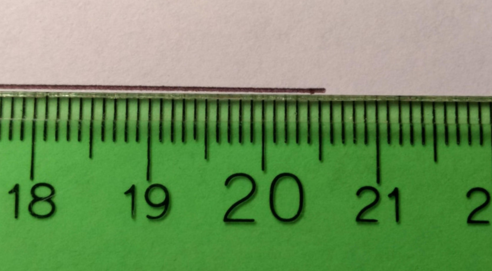
Cifras significativas
Considere…
Una región rectangular que tiene 20.5 cm de largo por 14.3 cm de ancho. Se requiere la medida del área de la región en centímetros cuadrados.
Diferentes personas reportarían sin dudar los primeros dos dígitos, a saber el dos y el cero, que en este contexto se llamarán dígitos confiables.
Se entenderá que esta medida en realidad es una cifra entre 20.5 cm y 20.6 cm con el tercer dígito llamado dígito de incertidumbre.
La cantidad de dígitos confiables más otro con incertidumbre, son las cifras significativas de una medición.
Cifras significativas
¿Que pasa con las operaciones?
Cuando se operen números con cifras significativas, el resultado tendrá tantas cifras significativas como el factor con menos cifras significativas.
Hablando de errores
Con el número de cifras significativas \(\left(n\right)\), se puede calcular la cota del error absoluto:
\[\varepsilon = \left( 0.5\times10^{2-n} \right) \%\]
Que pasa en los computadores?
\[\left(-1\right)^{s}2^{c-1023}\left(1+f\right)\]
Ejemplos de conversión de IEEE 754 a decimal
Dos numeros “diferentes”
- 0 10000000011 1011100100010000000000000000000000000000000000000000
- 0 10000000011 1011100100010000000000000000000000000000000000000001
El bit más izquierdo en ambos casos es “0”, por lo tanto en los dos casos los numéros son positivos.
Ejemplos de conversión de IEEE 754 a decimal
Dos numeros “diferentes”
- 0 10000000011 1011100100010000000000000000000000000000000000000000
- 0 10000000011 1011100100010000000000000000000000000000000000000001
En el ambos casos el exponente es 10000000011 por lo tanto el valor c se calcula así:
\[ c = 1 \cdot 2^{10} + 0 \cdot 2^{9} + \dots +1 \cdot 2^{1} + 1 \cdot 2^{0} = 1024+2+1=1027\]
Ejemplos de conversión de IEEE 754 a decimal
Dos numeros “diferentes”
- 0 10000000011 1011100100010000000000000000000000000000000000000000
- 0 10000000011 1011100100010000000000000000000000000000000000000001
La mantisa para el primer caso es:
\[1011100100010000000000000000000000000000000000000000\] \[ f = 1 \cdot 2^{-1} + 1 \cdot 2^{-3} + 1\cdot 2^{-4} +1 \cdot 2^{-5} + 1 \cdot 2^{-8} + 1 \cdot 2^{-12} \] \[ f = 0.5 + 0.125 + 0.0625 + 0.03125 + 0.00390625 + 0.000244140625\] \[ f= 0.7229003906250000000000\]
Ejemplos de conversión de IEEE 754 a decimal
Dos numeros “diferentes”
- 0 10000000011 1011100100010000000000000000000000000000000000000000
- 0 10000000011 1011100100010000000000000000000000000000000000000001
La mantisa para el segundo caso es:
\[1011100100010000000000000000000000000000000000000001\] \[ f = 1 \cdot 2^{-1} + 1 \cdot 2^{-3} + 1\cdot 2^{-4} +1 \cdot 2^{-5} + 1 \cdot 2^{-8} + 1 \cdot 2^{-12} + 1 \cdot 2^{-52}\] \[ f = 0.5 + 0.125 + 0.0625 + 0.03125 + 0.00390625 + 0.000244140625 + 2,220476049250313e-16\] \[f = 0.7229003906250002220446\]
Los números "más grande" y "más pequeño"
Importante
- Más grande: Sucede cuando \(s=0\), \(c=2046\), \(f=1-2^{-52}\)
- Más pequeño: Sucede cuando \(s=0\), \(c=1\), \(f=0\)
Error de truncamiento
Importante
Dentro de los números reales \(\left( \mathbb{R} \right)\), existen dos conjuntos de números claramente diferenciables, los racionales \(\left( \mathbb{Q} \right)\) y los irracionales \(\left( \mathbb{I} \right)\). Los primeros son facilmente representables en un sistema computacional; sin embargo los segundo debido a que no pueden ser representados con un número finito de digitos deben ser cortados a unas cuantas cifras.
Nota
Sin embargo, hay formas metódicas de obtener aproximaciones tan buenas como se quieran a estos números. Como por ejemplo las conocidas series de Taylor
\[f\left( x \right) = f\left( c \right) + \dot{f}\left( c \right)\left( x-c \right) + \frac{\ddot{f}\left( c \right)}{2!}\left( x-c \right)^2 + \frac{\dddot{f}\left( c \right)}{3!}\left( x-c \right)^3 + \dots + \frac{f^{\left(n\right)}\left( c \right)}{n!}\left( x-c \right)^n\]
- Todas las derivadas deben existir.
- Función y derivadas en el intervalo \(\left(x,c\right)\)
Error de truncamiento
Forma de Langrange
\[R_n\left( x \right) = \frac{f^{\left( n+1 \right)}\left( \xi \right)}{\left( n+1 \right)!}\left( x-c \right)^{n+1}\]
Forma Integral
\[R_n\left( x \right) = \int_{c}^{x}{\frac{f^{\left(n+1\right)}\left(t\right)}{n!}\left(x-t\right)^{n}dt}\]
Ejemplo de Error de truncamiento
Recordemos
\[f\left( x \right) = f\left( c \right) + \dot{f}\left( c \right)\left( x-c \right) + \frac{\ddot{f}\left( c \right)}{2!}\left( x-c \right)^2 + \frac{\dddot{f}\left( c \right)}{3!}\left( x-c \right)^3 + \dots + \frac{f^{\left(n\right)}\left( c \right)}{n!}\left( x-c \right)^n\]
Calcular ln(1.1), centrado en c=1, y orden 4
\[f\left(x\right)=ln\left(x\right)\]
\[\dot{f}\left(x\right) = \frac{1}{x}\]
\[\ddot{f}\left(x\right) = -\frac{1}{x^2}\]
\[\dddot{f}\left(x\right) = \frac{2}{x^3}\]
\[\ddddot{f}\left(x\right) = -\frac{6}{x^4}\]
Ejemplo de Error de truncamiento
Calcular ln(1.1), centrado en c=1, y orden 4
\[f\left(1.1\right)=ln\left(1\right)+\frac{1}{1.1}\left(1.1 - 1\right)-\frac{1}{2\cdot 1.1^2}\left(1.1-1\right)^2+\frac{2}{6\cdot 1.1^3}\left(1.1 - 1\right)^3 - \frac{6}{24\cdot 1.1^4}\left(1.1 - 1\right)^4\]
print(taylor_expansion_ln(1.1))0.08701022243471537Ejemplo de Error de truncamiento
Recordemos
\[R_n\left( x \right) = \frac{f^{\left( n+1 \right)}\left( \xi \right)}{\left( n+1 \right)!}\left( x-c \right)^{n+1}\]
Error en forma de lagrange
\[R_4\left(1.1\right) = \frac{24\xi^{-5}}{5!}\left(1.1 - 1\right)^{5}\]
def error_taylor_expansion(x):
return ((24*x**(-5))/120)*(0.1**5)Ejemplo de Error de truncamiento
import numpy as np
import matplotlib.pyplot as plt
v = np.arange(1,1.1,0.0001)
error = error_taylor_expansion(v)
fig, ax = plt.subplots()
ax.plot(v,error)
ax.set_xlabel("Valor")
ax.set_ylabel("Error de truncamiento")
plt.show()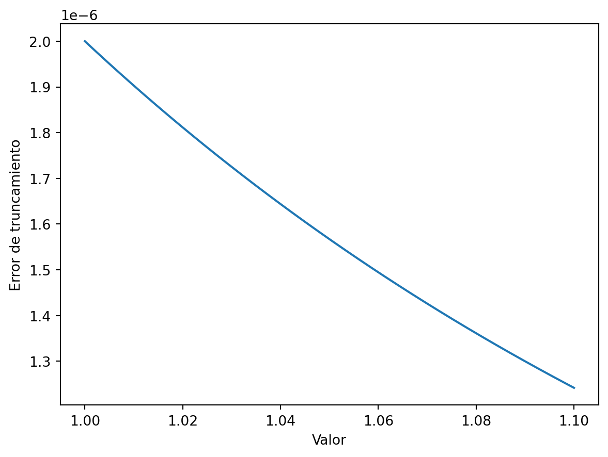
Ejemplo de Error de truncamiento
Calcular ln(1.1), centrado en c=1, y orden 4
\[f\left(1.1\right)=ln\left(1\right)+\frac{1}{1}\left(1.1 - 1\right)-\frac{1}{2\cdot 1^2}\left(1.1-1\right)^2+\frac{2}{6\cdot 1^3}\left(1.1 - 1\right)^3 - \frac{6}{24\cdot 1^4}\left(1.1 - 1\right)^4\]
def taylor_expansion_ln(x):
return ((1/1)*(x-1))-((1/(2*(1**2)))*(x-1)**2)+ ((2/(6*(1**3)))*(x-1)**3)-((6/(24*(1**4)))*(x-1)**4)print(taylor_expansion_ln(1.1))0.09530833333333343Error de redondeo
Supongamos…
\[x=\frac{5}{7}\] \[y = \frac{1}{3}\]
Calcular x+y utilizando aritmética de digitos finitos, utilizando 6 cifras significativas, considerando:
- Método de truncamiento
- Método de redondeo
Calcular el error para todos los casos anteriores
Error de redondeo
print(5.0/7.0)0.7142857142857143Utilizando redondeo…
\[x=0.714286\times10^0\]
print(1.0/3.0)0.3333333333333333Utilizando redondeo…
\[x=0.333333\times10^0\]
\[x+y=0.104762\times10^{1}\]
print( "Error absoluto:", abs(((22.0/21.0) - (1.04762))) )
print( "Error relativo:", abs(((22.0/21.0) - (1.04762))/((22.0/21.0))) )Error absoluto: 9.523809523237503e-07
Error relativo: 9.090909090363071e-07Error de redondeo
print(5.0/7.0)0.7142857142857143Utilizando truncamiento…
\[x=0.714285\times10^0\]
print(1.0/3.0)0.3333333333333333Utilizando truncamiento…
\[x=0.333333\times10^0\]
\[x+y=0.104761\times10^{1}\]
print( "Error absoluto:", abs(((22.0/21.0) - (1.04761))) )
print( "Error relativo:", abs(((22.0/21.0) - (1.04761))/((22.0/21.0))) )Error absoluto: 9.047619047741762e-06
Error relativo: 8.636363636480771e-06Búsqueda de "raíces" de una función
Definicón
Las raíces o ceros de una función \(f\) son aquellos valores \(c\) tal que: \(f\left(c\right)=0\)
Ejemplo 1
La raiz de la función \(f\left(x\right) = 3x-4\) es \(x=\frac{4}{3}\)
Ejemplo 2
Los ceros de la función \(f\left(x\right) = x^2 -x -6\) son \(x=3\) y \(x=-2\)
Búsqueda de "raíces" de una función
Definicón
Las raíces o ceros de una función \(f\) son aquellos valores \(c\) tal que: \(f\left(c\right)=0\)
Ejemplo 1
La raiz de la función \(f\left(x\right) = 3x-4\) es \(x=\frac{4}{3}\)
import numpy as np
import matplotlib.pyplot as plt
x = np.arange(0,2,0.01)
f_x = 3*x-4
fig, ax = plt.subplots()
ax.plot(x, f_x)
plt.grid(True)
plt.show()Búsqueda de "raíces" de una función
Definicón
Las raíces o ceros de una función \(f\) son aquellos valores \(c\) tal que: \(f\left(c\right)=0\)
Ejemplo 1
La raiz de la función \(f\left(x\right) = 3x-4\) es \(x=\frac{4}{3}\)
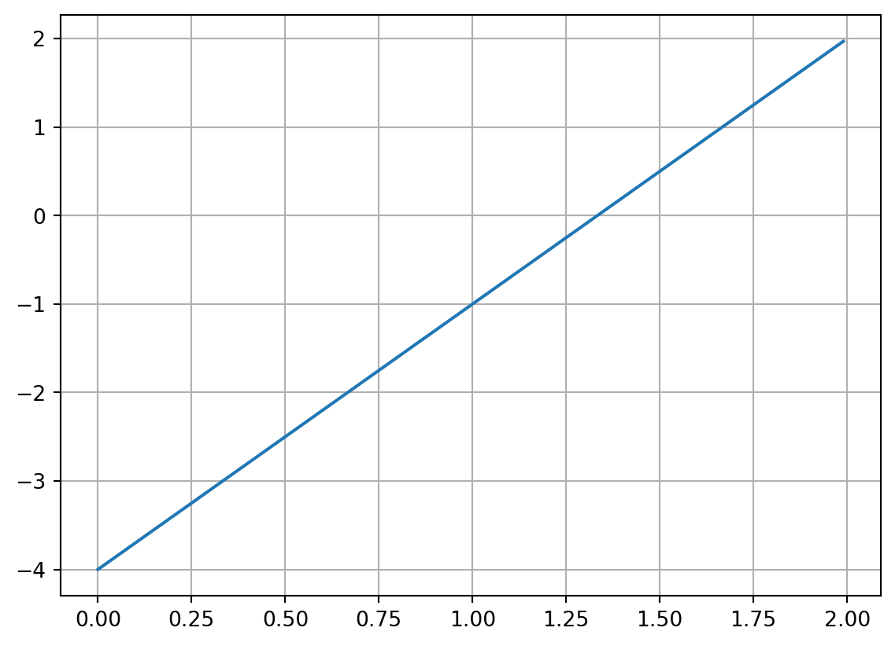
Búsqueda de "raíces" de una función
Definicón
Las raíces o ceros de una función \(f\) son aquellos valores \(c\) tal que: \(f\left(c\right)=0\)
import numpy as np
import matplotlib.pyplot as plt
t = np.arange(-3,4, 0.01)
f_t = (t**2)-(t)-6
fig, ax = plt.subplots()
ax.plot(t, f_t)
plt.grid(True)
plt.show()
Ejemplo 2
Los ceros de la función \(f\left(x\right) = x^2 -x -6\) son \(x=3\) y \(x=-2\)
Búsqueda de "raíces" de una función
Definicón
Las raíces o ceros de una función \(f\) son aquellos valores \(c\) tal que: \(f\left(c\right)=0\)
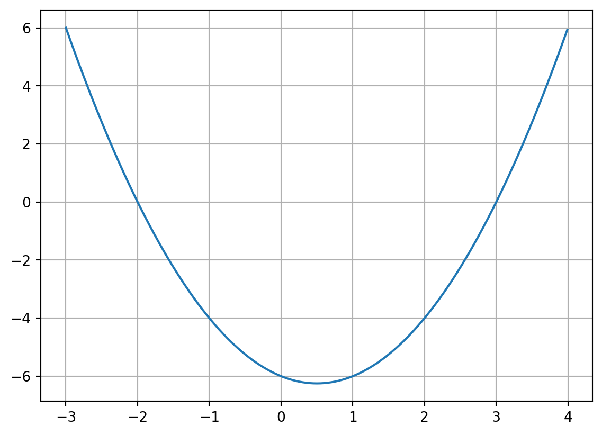
Ejemplo 2
Los ceros de la función \(f\left(x\right) = x^2 -x -6\) son \(x=3\) y \(x=-2\)
Que pasa con funciones más complejas
En muchas ecuaciones en ciencias e ingeniería, en las cuales no es posible aplicar un procedimiento para despejar la incógnita.
$f(x) = x - \(cos\left(x\right)\)
\(f\left(x\right) = e^{-x} - sin\left(x\right)\)
\(f\left(x\right) = x - tan\left(x\right)\)
\(f\left(x\right) = e^{x} - x\)
Soluciones de ecuaciones de una variable
A menudo, el crecimiento de una población se puede modelar sobre periodos breves al asumir que aumenta de manera continua con el tiempo a una tasa proporcional al número actual en ese momento. Suponga que \(N\left(t\right)\) denota el número en la población en el tiempo t y λ denota la tasa constante de natalidad. Entonces, dicha población satisface la ecuación diferencial:
\[\frac{d N\left(t\right)}{dt}=\lambda N\left(t\right)\]
Cuya solución es \(N\left(t\right)=N_0 e^{\lambda t}\)
import numpy as np
import matplotlib.pyplot as plt
N_o = 1e6
l_i = 0.5
t = np.arange(0,10,0.01)
N_t = N_o*np.exp(l_i*t)
fig, ax = plt.subplots()
ax.plot(t, N_t)
plt.show()Soluciones de ecuaciones de una variable
A menudo, el crecimiento de una población se puede modelar sobre periodos breves al asumir que aumenta de manera continua con el tiempo a una tasa proporcional al número actual en ese momento. Suponga que \(N\left(t\right)\) denota el número en la población en el tiempo t y λ denota la tasa constante de natalidad. Entonces, dicha población satisface la ecuación diferencial:
\[\frac{d N\left(t\right)}{dt}=\lambda N\left(t\right)\]
Cuya solución es \(N\left(t\right)=N_0 e^{\lambda t}\)
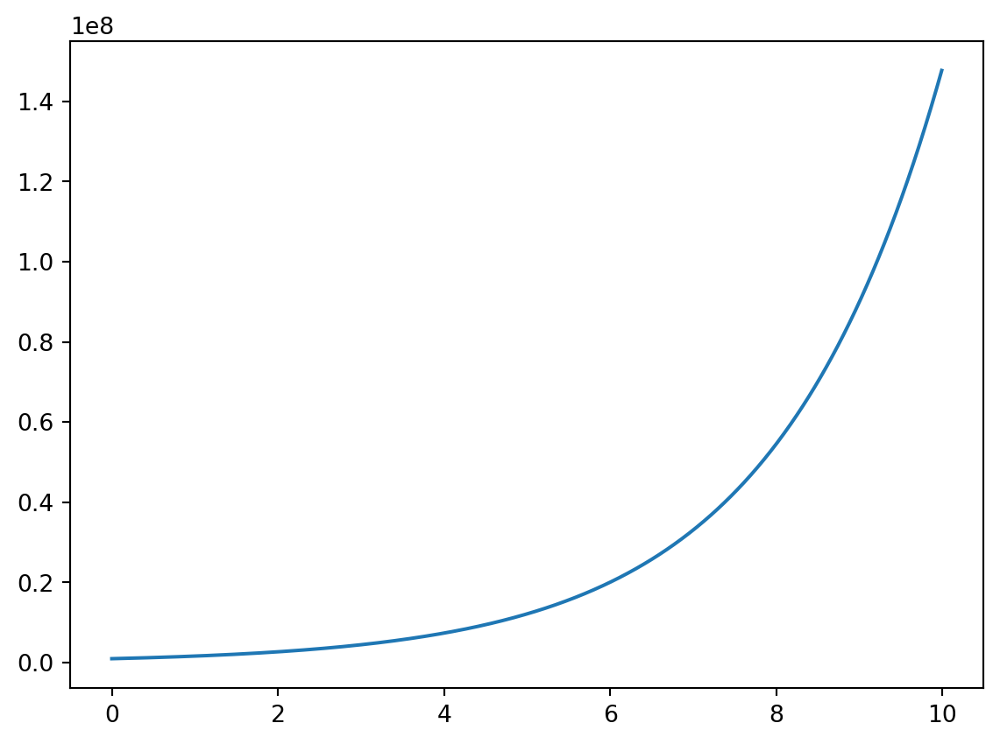
Soluciones de ecuaciones de una variable
Suponga que….
Suponga que, en un inicio, cierta población contiene \(N\left(0\right)=1000000\) individuos, que \(\upsilon=435000\) individuos inmigran a la comunidad durante el primer año y que existen N(1)=1564000 al finalizar el año. SI deseamos determinar el la tasa de natalidad \(\lambda\) se requiere encontrar las raíces de
\[1564000 = 1000000e^{\lambda} + \frac{435000}{\lambda}\left(e^{\lambda}-1\right)\]
import numpy as np
import matplotlib.pyplot as plt
lam = np.arange(0,0.2,0.0001)
def f(l):
return 1000000*np.exp(l) + ((435000)/(l)*((np.exp(l))-1)) - 1564000
fig, ax = plt.subplots()
ax.plot(lam, f(lam))
ax.grid(True)
plt.show()Soluciones de ecuaciones de una variable
Suponga que….
Suponga que, en un inicio, cierta población contiene \(N\left(0\right)=1000000\) individuos, que \(\upsilon=435000\) individuos inmigran a la comunidad durante el primer año y que existen N(1)=1564000 al finalizar el año. SI deseamos determinar el la tasa de natalidad \(\lambda\) se requiere encontrar las raíces de
\[1564000 = 1000000e^{\lambda} + \frac{435000}{\lambda}\left(e^{\lambda}-1\right)\]
/var/folders/47/yy19pxsn2mg5xhryg4kmp2tm0000gn/T/ipykernel_27302/3918670862.py:7: RuntimeWarning:
divide by zero encountered in divide
/var/folders/47/yy19pxsn2mg5xhryg4kmp2tm0000gn/T/ipykernel_27302/3918670862.py:7: RuntimeWarning:
invalid value encountered in multiply

Método de la bisección
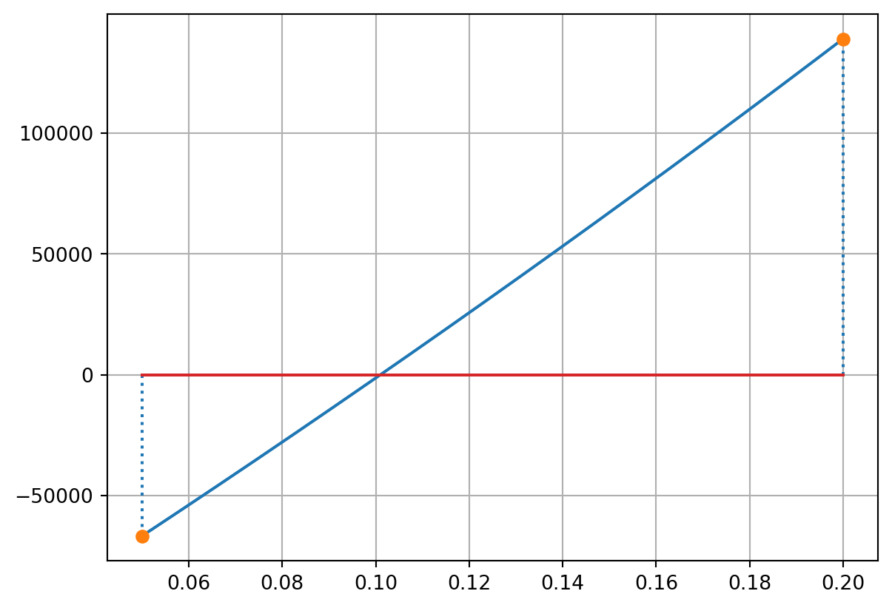
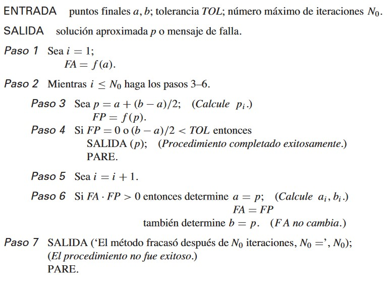
Método de la bisección
def met_bisectriz(a,b,tol,g,No):
i = 0
FA = g(a)
while i <= No:
p = a+ ((b-a)/2)
FP = g(p)
if (FP==0) or (((b-a)/2)<tol):
print("Lo logré, raíz en:", p, FP)
return p,i
break
i=i+1
if FA*FP > 0:
a=p
FA=FP
else:
b=p
print("Termine: ", i)Método de Regula-Falsi
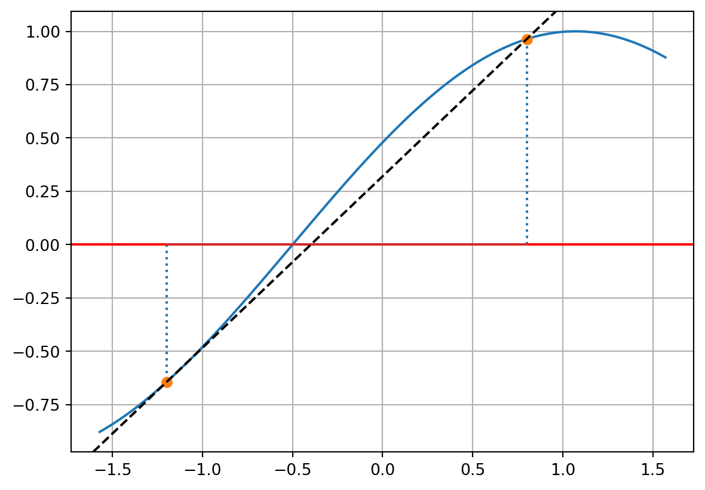
Método de Regula-Falsi
def met_regula_falsi(a,b,tol,g,No):
i = 0
FA = g(a)
FB = g(b)
while i <= No:
p = a - ((FA*(b-a))/(FB-FA))
FP = g(p)
if (FP==0) or (((b-a)/2)<tol):
#print("Lo logré, raíz en:", p, FP)
return p,i
break
i=i+1
if FA*FP > 0:
a=p
FA=FP
else:
b=p
FB=FP
print("Termine: ", i) Método de Newton-Raphson
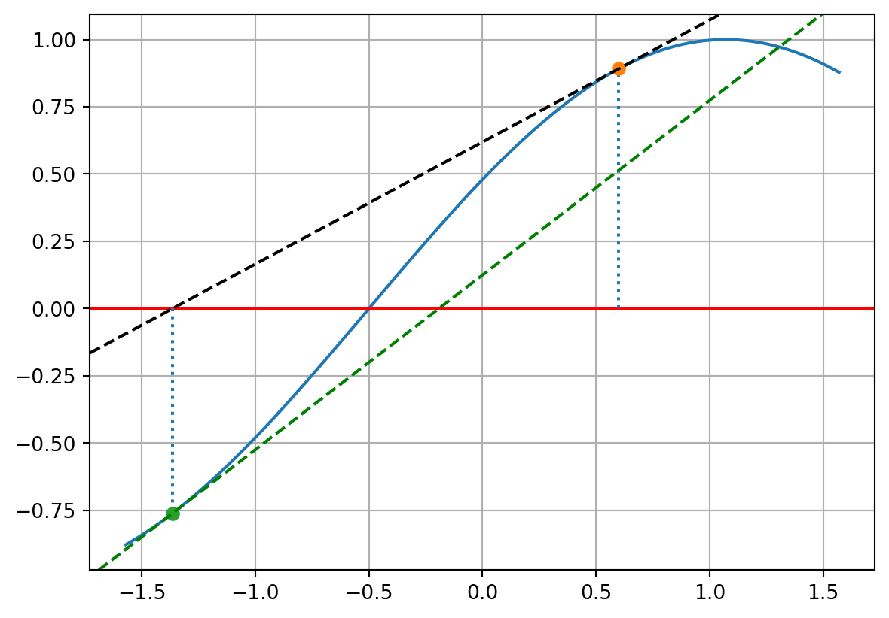
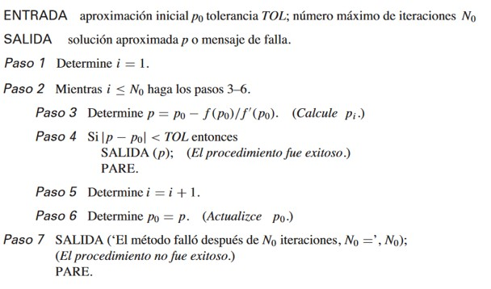
Taller
Pregunta 1/2
Dada la función \(f\left(x\right) = 8 sin\left(x\right) e^{-x} - 1\) responda las siguientes cuestiones:
Si se sabe que \(x \in \left[0,3\right]\), encuentre una raíz de la función. ¿Es utilizable el método de la bisección en el cálculo de la raíz?
Aplique Newton-Raphson para dos posibles valores iniciales: -5, 10. Cual es el resultado de la operación. Explique su resultado.
Taller
Pregunta 2/2
La velocidad de un para caídista esta dada por la siguiente función:
\[v=\frac{gm}{c}\left(1 - e^{-\frac{c}{m}t}\right)\]
Sea la gravedad \(g=9.8\), el coeficiente de rozamiento \(c=14Kg/s\), responda:
Cuál es el peso del paracaidista si se sabe que a los 7sg la velocidad de este era de \(35m/s\) ?
Utilizando una calculadora de gravedad, determine la gravedad real, si el experimento se hace en la ciudad de Popayán, vuelva a determinar la masa del paracaidista. Explique la discrepancia.
Interpolación
Problema
Problema
Una empresa inmobiliaria tiene 4 terrenos a la venta. La relación entre precio y área se puede observar en la siguiente tabla:
| Area | Precio |
|---|---|
| 0.8 | 10000 |
| 2.3 | 15000 |
| 4.7 | 40000 |
| 7.1 | 80000 |
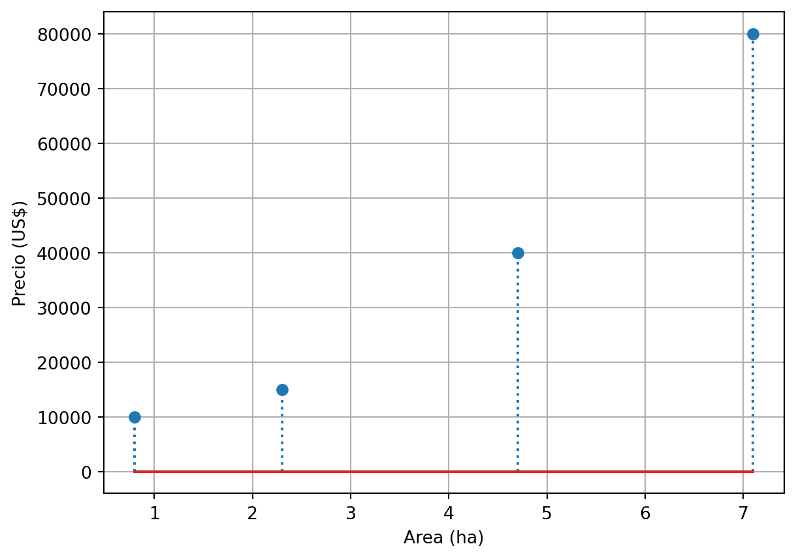
Problema
Problema
¿Cuánto debe valer un terreno de 3.5ha, si el precio del terreno sigue las mismas condiciones de los anteriores?
Enfoque exacto:
- Polinomios de Lagrange
- Polinomio de Newton
Enfoque por Ajustes sucesivos:
- Trazadores cúbicos.
- Mínimos cuadrados.
Polinomios de Lagrange
Interpolación polinomial
A partir de unos datos \(\left(x_0,y_0\right),\left(x_1,y_1\right),\left(x_2,y_2\right),\dots,\left(x_n,y_n\right)\) generar un polinomio \(\left( P\left(x\right) \right)\) (del menor grado posible) que pase por todos los puntos.
\[P\left(x\right) = a_0 + a_1x + a_2x^2+\dots+a_nx^n\]
Polinomios de Lagrange
Algoritmo
- Determinar un polinomios \(\gamma_i \left(x\right)\), que pase por \(\left(x_i,1\right)\) y se anule para el resto de datos. \[\gamma_i\left(x\right) = \prod_{j=0}^{n}\frac{x-x_j}{x_i-x_j}\]
Donde \(i \neq j\)
- Determinar polinomio \(P_i\left(x\right)\)
\[P_i\left(x\right) = y_i \gamma_i\left(x\right)\]
- Determinar polinomio \(P\left(x\right)\)
\[P\left(x\right) = \sum_{i=0}^{n}P_i\left(x\right)\]
Solución al problema
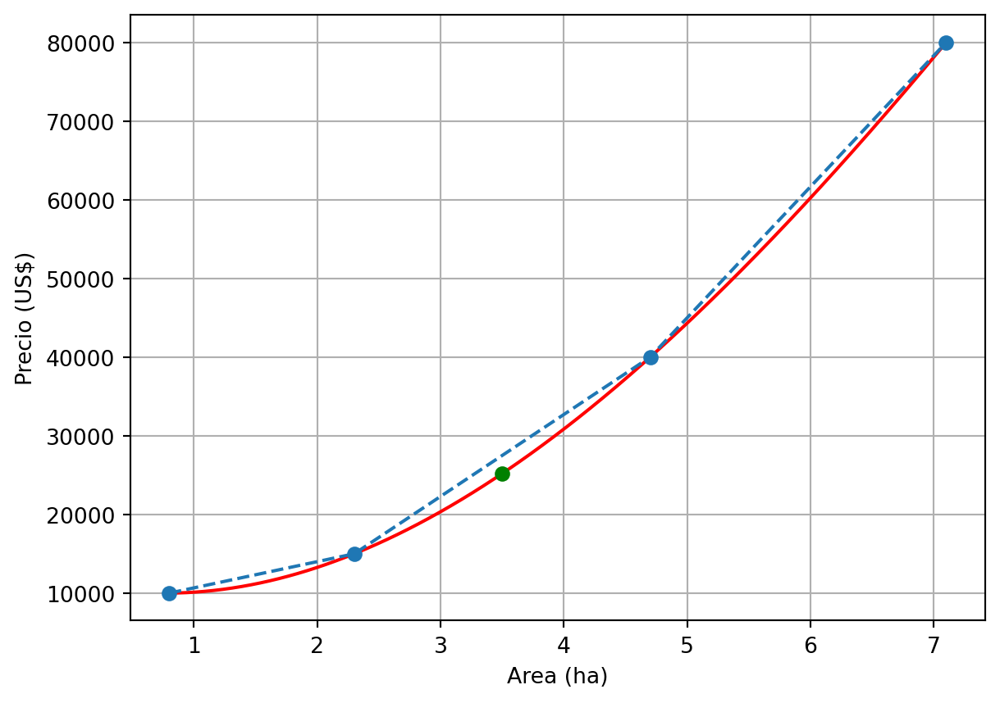
Polinomio de Newton
Nota
Construir el polinomio \(P_0 \left(x\right)\) el cuál pasa por el punto \(\left(x_0, y_0\right)\). La propuesta más simple es \(P_0 \left(x\right) = y_0\)
Construir el polinomio \(P_1 \left(x\right)\) el cuál pasa por el punto \(\left(x_1, y_1\right)\), pero que parta de \(P_0 \left(x\right)\). Una propuesta de este es \(P_1 \left(x\right) = y_0+ c_1 \left(x-x_0\right)\)
Construir el polinomio \(P_2 \left(x\right)\) el cuál pasa por el punto \(\left(x_2, y_2\right)\), pero que parta de \(P_1 \left(x\right)\). Una propuesta de este es \(P_2 \left(x\right) = y_0 + c_1 \left(x-x_0\right) + c_2\left(x-x_0\right)\left(x-x_1\right)\)